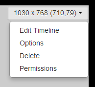

Regions
If you are using v2 of the CMS, please use the following link: Regions
Regions define areas on a Layout which hold Media content (Widgets) to form Playlists (sets of timed content).
Regions can be positioned anywhere inside a Layout using drag and drop, and resized by using the resize handle located in the lower right-hand corner of the Region.
Regions show on the Layout Designer as semi-transparent white overlays.
Each change that is made to a Region must be saved using the Save Region Positions button, or it will revert back to previous settings.
Adding Regions
Add Regions by using the +Region button in the toolbox, a new Region will appear in the top left of the Layout, which can then be moved or resized by the designer.

If a Layout has been created from a Template it will most likely have a full-screen Region pre-created. Make sure you don't accidentally create new Regions over the top of this one, empty Regions cause the Layout to be marked as invalid and WILL NOT PLAY.
Region Menu
Each Region has its own drop-down menu of Actions, located at the top right corner of a Region, as well as showing the width, height and coordinates of that Region.

Edit Timeline
Assign content to the Region or amend the existing Playlist.
The menu's default action is Edit Timeline which can also be accessed by double-clicking on the Region.
Options
This form allows for naming, precise sizing and positioning as well as Exit Transitions and Layering. Use the Set Full Screen button at the bottom of this form to set the Region full screen.
Exit Transitions happen when the last Media item in a Region is shown and occurs only when all other Media items have expired in the other Regions.
Transitions are only supported in the Ubuntu /Android and webOS Display clients and need to be configured, please contact your Administrator.
Delete
Remove the Region and all its associated content. This action cannot be undone.
Permissions
Control which User and User Groups can view/edit/delete the Region.
The owner of the Layout has full control over sharing.
A globally shared Layout can have Region access rights defined for any other users of the CMS. Read more for Permissions for User Objects
NOTE: The Windows Player does not support overlapping Regions. For a mixed Player network ensure Regions do not overlap for the best results.